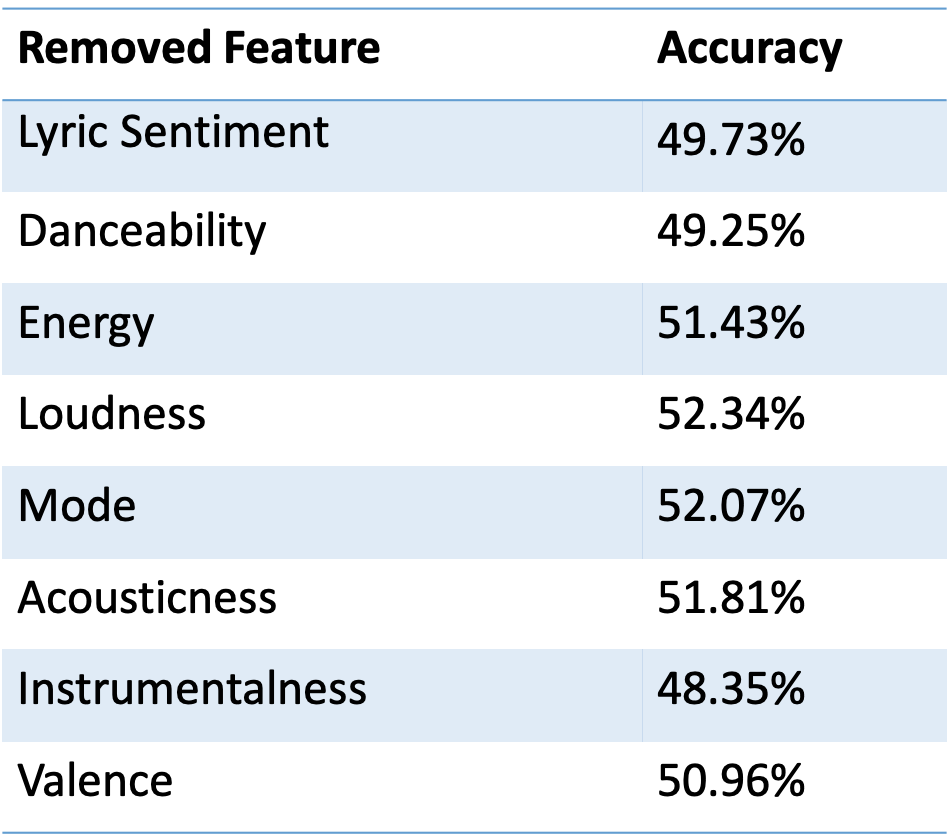
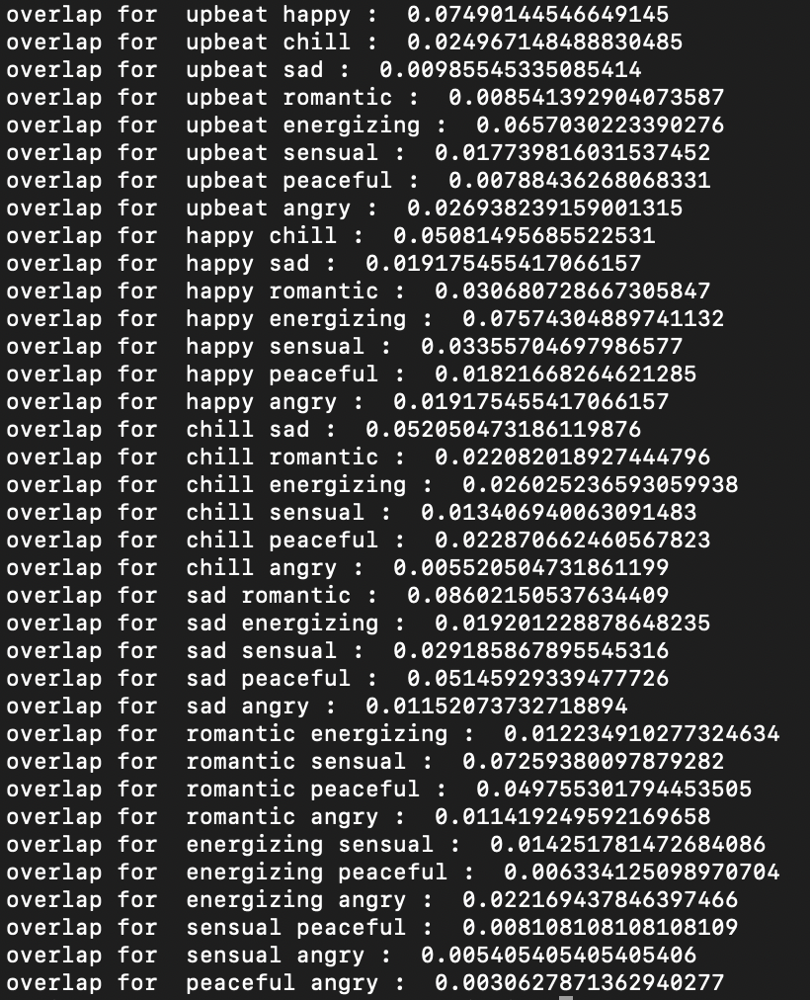

EECS 352 Spring 2019
Professor Bryan Pardo
Northwestern University
Wesley Chan, Kimberly Kwon, and Jodie Wei
wesleychan2019@u.northwestern.edu, kimberlykwon2019@u.northwestern.edu, jodiewei2019@u.northwestern.edu
Many modern music recommendation systems have built recommendations surrounding moods. We wanted to build our own musical mood classifier that is able to take in audio of a song, and determine the overall mood of it.
With the advancements and success of many strong music exploration and recommendation software available today, the mood of songs has become an incredibly important factor in this hierarchy. People’s moods change frequently, and their moods will often affect their taste in music at that time. Furthermore, music also tends to incite emotion, and being able to leverage the emotional power of music in order to spark a feeling in a listener can be extremely powerful in many settings. To generate more successful recommendations, it’s important to be able to categorize songs by their overall mood in order to better match a user’s musical preferences at that particular time.
We decided to build a model that uses various song features to categorize songs into several discrete mood labels.
We used SpotiPy, Spotify's Python API, to search for 20 playlists for each mood we use as a classifying label, and downloaded data about the song features, for all songs in the playlists, giving us at least 1,000 songs per classification with 9 different classes. We then limited the number of songs for each mood to 1,043, since that was the length of the shortest mood song set, giving us a total of 9,387 songs.
The mood labels we decided to include in our dataset are:
Romantic, Happy, Sad, Chill, Angry, Peaceful, Energizing, Upbeat, and Sensual
To perform sentiment analysis on each song's lyric, we used the Genius Python API to retrieve the lyrics for each song, and the overall sentiment for the lyrics were calculated using Python TextBlob and averaged across all lines. Then we utilized Spotify's API to grab 8 other audio features of each song. These features are described in more depth in Spotify's documentation
The resulting features used for each song were:
Lyric sentiment, Danceability, Energy, Loudness, Mode, Acousticness, Instrumentalness, Valence, and Tempo.
We decided to implment a K-Nearest Neighbors algorithm as our classifier. With our constructed dataset, we first start by scaling all features to standardize them. Then we split the dataset into a training set (80%) and testing set (20%). Then we fit our KNN model to the training data using k=20, Euclidean distance metric, and weighted by distance.
To test our results, we fit our KNN model to our training set and run all the songs in our test set with the model. Because some songs may be labeled as more than one mood in the dataset, we keep track of all the mood labels each song has to mitigate any mood overlap problems (more information on song overlaps in the "More Interesting Findings" section below. If the KNN prediction for a song matches any of the moods associated with the song, the classification is considered correct. We generated confusion matrices to allow us to further refine our model and also gain insight into which moods had the highest classification accuracy, and to analyze the impact of individual features using ablation testing.
Our KNN classifier had an accuracy of around 52%. For 9 possible classifications, this isn't too bad.
We split our data into a train and test set, and below is the confusion matrix generated from the testing. Peaceful, sensual, and angry songs had the highest rate of accuracy, while happy and romantic songs had some trouble. Additionally, it's interesting to note which type of songs were most frequently misclassified and what labels they were most frequently misclassified as. No angry songs were mislabeled as being peaceful, probably because the features of angry songs and peaceful songs are very different. Happy songs were most often classified as upbeat, and a significant amount of upbeat songs were classified as happy, leading us to question whether our selected mood labels were the cause of error in the model. Overall, a 52.3% accuracy indicates good performance considering the predictor is predicting out of nine labels.
One aspect we noticed about our data gathering method was that since we were using user-created playlists on Spotify, a song's existence in a certain mood playlist was completely subjective to the playlist creator. There were songs that had mood classifications that we personally did not agree with. Moreover, the dataset was likely not big enough to garner enough external validity. In the future, we would look into other ways of categorizing songs, and more reliable methods to generate a larger dataset of various songs. In addition to this, it’ll also be worthwhile to look more into audio analysis of the songs to include as features.
It would also be interesting to test the accuracy of our model using mood labels different from the nine we are currently using.
Additionally, in the future our project could be used to automatically generate Spotify mood playlists, for the perfect playlist for any situation.
We tried our classifier on some of our favorite songs. The output for each is a bar graph showing the distribution of mood labels in each song's k=20 neighbors, with the most common mood label being the classification for the input song.
We performed ablation testing on the features for each data point by testing our classifier several times with one feature removed each time. The point of this was to see which features tend to affect the accuracy the most, whether positively or negatively.

With our baseline accuracy as 52.3% with all nine features, we see that taking out loudness and mode increased accuracy the most while taking out instrumentalness decreased accuracy most. Overall though, no features seemed to tank or bolster accuracy by a substantial amount. In the future, it would be interesting to also perform principal component analysis on our features and test combinations of features as well in addition to just taking them out one by one.
We noticed that we had a few songs that were present in different mood categories. To mitigate this, we created a dataset of songs and all associated moods.

The ratios of overlapped songs for each mood pair was quite low, however we were concerned that having overlap build up over several moods would have an impact on our model so we created another dataset of each song and all of its associated moods. Our predictions then was considered correct as long as it was one of the moods associated with the song. We found that this did increase our accuracy.
Download the repository and try it out on your own machine. Just type "python main.py" into the terminal.
Link provided in the section above, but here it is again if you don't want to scroll back up.
Try "python main.py" in the command line.
Special thanks to Professor Pardo!